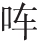
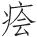

诗云：
自古有神巫，其术能役鬼。
祸福如烛照，妙解阴阳理。
不独倾公卿，时亦动天子。
岂似后世者，其人总村鄙
［1］
。
语言甚不伦，偏能惑闾里
［2］
。
淫祀无虚日
［3］
，枉杀供牲醴。
安得西门豹
［4］
，投畀邺河水
［5］
。
话说男巫女觋 ［6］ ，自古有之。汉时谓之“下神”，唐世呼为“见鬼人”。尽能役使鬼神，晓得人家祸福休咎，令人趋避，颇有灵验。所以公卿大夫，都有信着他的；甚至朝廷宫闱之中，有时召用。此皆有个真传授，可以行得去做得来的，不是荒唐。却是世间的事，有了真的，便有假的。那无知男女，妄称神鬼，假说阴阳，一些影响没有的，也一般会哄动乡民，做张做势的 ［7］ ，从古来就有了。直到如今，真有术的巫觋已失其传，无过是些乡里村夫，游嘴老妪，男称太保 ［8］ ，女称师娘，假说降神召鬼，哄骗愚人。口里说汉话 ［9］ ，便道神道来了。却是脱不得乡气，信口胡柴的 ［10］ ；多是不囫囵的官话 ［11］ ，杜撰出来的字眼。正经人听了，浑身麻木，忍笑不住的；乡里人信是活灵活现的神道，匾匾的信伏 ［12］ 。不知天下曾有那不会讲官话的神道么！又还一件可恨处，见人家有病人来求他，他先前只说救不得，直到拜求恳切了，口里说出许多牛羊猪狗的愿心来，要这家脱衣典当，杀生害命，还恐怕神道不肯救，啼啼哭哭的。及至病已犯拙 ［13］ ，烧献无效，再不怨怅他、疑心他，只说不曾尽得心，神道不喜欢。见得如此，越烧献得紧了，不知弄人家费多少钱钞，伤多少性命。不过供得他一时乱话，吃得些，骗得些罢了。律上禁止师巫邪术，其法甚严，也还加他“邪术”二字，要见还成一家说话。而今并那邪不成邪，术不成术，一味胡弄。愚民信伏，习以成风，真是痼疾不可解，只好做有识之人的笑柄而已。
苏州有个小民，姓夏，见这些师巫兴头 ［14］ ，也去投着师父，指望传些真术。岂知费了拜见钱，并无甚术法得传，只教得些游嘴门面的话头，就是祖传来辈辈相授的秘诀。习熟了，打点开场施行。其邻有个范春元，名汝舆，最好戏耍。晓得他是头番初试，原没甚本领的，设意要弄他一场笑话。来哄他道：“你初次降神，必须露些灵异出来，人才信服。我忝为你邻人，与你商量个计较，帮衬着你，等别人惊骇方妙。”夏巫道：“相公有何妙计？”范春元道：“明日等你上场时节，吾手里拿着糖糕叫你猜。你一猜就着，我就赞叹起来，这些人自然信服了。”夏巫道：“相公肯如此帮衬小人，小人万幸。”到得明日，远近多传道“新太保降神”，来观看的甚众。夏巫登场，正在捏神捣鬼，妆憨打痴之际，范春元手中捏着一把物事来，问道：“你猜得我掌中何物，便是真神道。”夏巫笑道：“手中是糖糕。”范春元假意拜下去，道：“猜得着，果是神明。”即拿手中之物，塞在他口里去。夏巫只道是糖糕，一口接了。谁知不是糖糕滋味，又臭又硬，甚不好吃。欲待吐出，先前猜错了，恐怕露出马脚，只得攒眉忍苦咽了下去。范春元见吃完了，发一 道 ［15］ ：“好神明，吃了干狗屎了！”众人起初看见他吃法烦难，也有些疑心，及见范春元说破，晓得被他做作 ［16］ ，尽皆哄然大笑，一时散去。夏巫吃了这场羞，传将开去，此后再弄不兴了。似此等虚妄之人，该是这样处置他才妙。怎当得愚民要信他骗哄，亏范春元是个读书之人，弄他这些破绽出来。若不然时，又被他胡行了。
范春元不足奇，宋时还有个小人，也会不信师巫，弄他一场笑话。华亭金山庙临海边 ［17］ ，乃是汉霍将军祠 ［18］ 。地方人相传，道是钱王霸吴越时 ［19］ ，他曾起阴兵相助，故此崇建灵宫。淳熙末年，庙中有个巫者，因时节边聚集县人，捏神捣鬼，说将军附体，宣言祈祝他的广有福利。县人信了，纷竞前来。独有钱寺正家一个干仆沈晖 ［20］ ，倔强不信，出语谑侮。有与他一班相好的，恐怕他触犯了神明，尽以好言相劝，叫他不可如此戏弄。那庙巫宣言道：“将军甚是恼怒，要来降祸。”沈晖偏要与他争辨道：“人生祸福天做定的，那里什么将军来摆布得我？就是将军有灵，决不附着你这等村蠢之夫，来说祸说福的。”正在争辨之时，沈晖一交跌倒，口流涎沫，登时晕去。内中有同来的，奔告他家里。妻子多来看视，见了这个光景，分明认是得罪神道了，拜着庙巫讨饶。庙巫越妆起腔来，道：“悔谢不早，将军盛怒，已执录了精魄 ［21］ ，押赴酆都，死在顷刻，救不得了。”庙巫看见晕去不醒，正中下怀，落得大言恐吓。妻子惊惶无计，对着神像只是叩头。又苦苦哀求庙巫，庙巫越把话来说得狠了。妻子只得拊尸恸哭。看的人越多了，相戒道：“神明利害如此，戏谑不得的！”庙巫一发做着天气，十分得意。只见沈晖在地下扑的跳将起来。众人尽道是强魂所使，俱各惊开。沈晖在人丛中跃出，扭住庙巫，连打数掌，道：“我打你这枉口嚼舌的，不要慌！哪曾见我酆都去了？”妻子道：“你适才却怎么来？”沈晖大笑道：“我见这些人信他，故意做这个光景，耍他一耍。有甚么神道来？”庙巫一场没趣，私下走出庙去躲了。合庙之人，尽皆散去。从此也再弄不兴了。
看官，只看这两件事，你道巫师该信不该信？所以聪明正直之人，再不被那一干人所惑，只好哄愚夫愚妇，一窍不通的。小子而今说一个极做天气的巫师，撞着个极不下气的官人 ［22］ ，弄出一场极畅快的事来，比着西门豹投巫，还觉希罕。正是：
奸欺妄欲言生死，宁知受欺正于此。
世人认做活神明，只合同尝干狗屎。
话说唐武宗会昌年间 ［23］ ，有个晋阳县令 ［24］ ，姓狄，名维谦，乃反周为唐的名臣狄梁公仁杰之后 ［25］ 。守官清恪，立心刚正。凡事只从直道上做去，随你强横的，他不怕。就上官也多谦让他一分。治得个晋阳户不夜闭，道不拾遗，百姓家家感德衔恩，无不赞叹的。谁知天灾流行，也是晋阳地方一个悔气。虽有这等好官在上，天道一时亢旱起来，自春至夏，四五个月内，并无半点雨泽。但见：
田中纹坼，井底尘生。滚滚烟飞，尽是晴光浮动；微微风撼，元来暖气薰蒸。辘轳不绝声，止得泥浆半杓；车戽无虚刻，何来活水一泓？供养着五湖四海行雨龙王，急迫煞八口一家喝风狗命。止有一轮红日炎炎照，那见四野阴云欻欻兴？
旱得那晋阳数百里之地，土燥山焦，港枯泉涸，草木不生，禾苗尽槁。急得那狄县令屏去侍从仪卫，在城隍庙中跣足步祷，不见一些征应。一面减膳羞，禁屠宰，日日行香，夜夜露祷。凡是那救旱之政，没一件不做过了。
话分两头。本州有个无赖邪民，姓郭，名赛璞，自幼好习符咒。投着一个并州来的女巫 ［26］ ，结为伙伴，名称师兄师妹，其实暗地里当做夫妻。两个一正一副，花嘴骗舌，哄动乡民不消说。亦且男人外边招摇，女人内边蛊惑。连那官宦大户人家，也有要祷除灾祸的，也有要祛除疾病的，也有夫妻不睦要他魇样和好的 ［27］ ，也有妻妾相妒要他各使魇魅的 ［28］ ，种种不一，弄得太原州界内七颠八倒。本州监军使 ［29］ ，乃是内监出身。这些太监心性，一发敬信的了不得。监军使适要朝京，因为那时朝廷也重这些左道异术 ［30］ ，郭赛璞与女巫便思量随着监军使之便，到京师走走，图些侥幸。那监军使也要作兴他们 ［31］ ，主张带了他们去。到得京师，真是五方杂聚之所，奸宄易藏，邪言易播。他们施符设咒，救病除妖，偶然撞着小小有些应验，便一传两，两传三，各处传将开去，道是异人异术，分明是一对活神仙在京里了。及至来见他的，他们习着这些大言不惭的话头，见神见鬼，说得活灵活现。又且两个一鼓一板，你强我赛。除非是正人君子不为所惑，随你 嗻伶俐的好汉，但是一分信着鬼神的，没一个不着他道儿 ［32］ 。外边既已哄传其名 ［33］ ，又因监军使到北司各监赞扬 ［34］ ，弄得这些太监往来的多了，女巫遂得出入宫掖 ［35］ ，时有恩赉；又得太监们帮衬之力，夤缘圣旨，男女巫俱得赐号“天师”。元来唐时崇尚道术，道号天师，僧赐紫衣，多是不以为意的事。却也没个什么职掌衙门，也不是什么正经品职，不过取得名声好听，恐动乡里而已。郭赛璞既得此号，便思荣归故乡，同了这女巫仍旧到太原州来。此时无大无小，无贵无贱，尽称他每为天师。他也妆模作样，一发与未进京的时节，气势大不同了。
正值晋阳大旱之际，无计可施。狄县令出着告示道：“不拘官吏军民人等，如有能兴云致雨，本县不惜重礼酬谢。”告示既出，有县里一班父老，率领着若干百姓，来禀县令道：“本州郭天师，符术高妙，名满京都。天子尚然加礼，若得他一至本县祠中，那祈求雨泽，如反掌之易。只恐他尊贵，不能勾得他来。须得相公虔诚敦请，必求其至，以救百姓，百姓便有再生之望了。”狄县令道：“若果然其术有灵，我岂不能为着百姓屈己求他？只恐此辈是大奸猾，煽起浮名，未必有真本事。亦且假窃声号，妄自尊大，请得他来，徒增尔辈一番骚扰，不能有益。不如就近访那真正好道、潜修得力的，未必无人。或者有得出来应募，定胜此辈虚嚣的一倍。本县所以未敢慕名开此妄端耳。”父老道：“相公所见固是，但天下有其名必有其实，见放着那朝野闻名 嗻的天师不求，还那里去另访得道的？这是‘现钟不打，又去炼铜’了。若相公恐怕供给烦难，百姓们情愿照里递人丁派出做公费 ［36］ 。只要相公做主，求得天师来，便莫大之恩了。”县令道：“你们所见既定，我何所惜！”于是县令备着花红表里 ［37］ ，写着恳请书启，差个知事的吏典，代县令亲身行礼，备述来意已毕。天师意态甚是倨傲 ［38］ ，听了一回，慢然答道：“要祈雨么？”众人叩头道：“正是。”天师笑道：“亢旱乃是天意。必是本方百姓罪业深重，又且本县官吏贪污不道，上天降罚，见得如此。我等奉天行道，怎肯违了天心，替你们祈雨？”众人又叩头道：“若说本县县官，甚是清正有馀，因为小民作业，上天降灾。县官心生不忍，特慕天师大名，敢来礼聘。屈尊到县，祈请一坛甘雨，万勿推却，万民感戴。”天师又笑道：“我等岂肯轻易赴汝小县之请？”再三不肯。吏典等回来，回覆了狄县令。父老同百姓等多哭道：“天师不肯来，我辈眼见得不能存活了。还是县宰相公再行敦请，是必要他一来便好！”县令没奈何，只得又加礼物，添差了人，另写了恳切书启。又申个文书到州里，央州将分上 ［39］ ，恳请必来。州将见县间如此勤恳，只得自去拜望天师，求他一行。天师见州将自来，不得已，方才许诺。众人见天师肯行，欢声动地，恨不得连身子都许下他来。天师叫备男女轿各一乘，同着女师前往。这边吏典父老人等，惟命是从，敢不齐整？备着男女二轿，多结束得分外鲜明 ［40］ 。一路上秉香燃烛，幢幡宝盖，真似迎着一双活佛来了。到得晋阳界上，狄县令当先迎着。他两人出了轿，与县令见礼毕。县令把着盏，替他两个上了花红彩段。鞴过马来，换了轿，县令亲替他笼着马，鼓乐前导，迎至祠中。先摆着下马酒筵，极其丰盛。就把铺陈行李之类 ［41］ ，收拾在祠后洁净房内。县令道了安置，别了自去，专候明日作用。不题。
却说天师到房中对女巫道：“此县中要我每祈雨，意思虔诚，礼仪丰厚，只好这等了。满县官吏人民，个个仰望着下雨。假若我们做张做势，造化撞着了，下雨便好。倘不遇巧，怎生打发得这些人？”女巫道：“枉叫你弄了若干年代把戏，这样小事就费计较？明日我每只把雨期约得远些，天气晴得久了，好歹多少下些。有一两点洒洒，便算是我们功德了。万一到底不下，只是寻他们事故，左也是他不是，右也是他不是。弄得他们不耐烦，我们做个天气 ［42］ ，只是撇着要去 ［43］ ，不肯再留。那时只道恼了我们性子，扳留不住，自家只好忙乱，那个还来议我们的背后不成？”天师道：“有理，有理。他既十分敬重我们，料不敢拿我们破绽，只是老着脸皮做便了。”商量已定。次日，县令到祠请祈雨。天师传命：就于祠前设立小坛停当。天师同女巫在城隍神前，口里胡言乱语的，说了好些鬼话，一同上坛来。天师登位，敲动令牌。女巫将着九环单皮鼓，打的厮琅琅价响。烧了好几道符，天师站在高处，四下一望，看见东北上微微有些云气。思量道：“夏雨北风生，莫不是数日内有雨落？得先说破了，做个人情。”下坛来，对县令道：“我为你飞符上界请雨，已奉上帝命下了。只要你们至诚，三日后雨当沾足。”这句说话传开去，万民无不踊跃喜欢。四郊士庶，多来团集了，只等下雨。悬悬望到三日期满，只见天气越晴得正路了 ［44］ ：
烈日当空，浮云扫净。蝗蝻得意，乘热气以飞扬；鱼鳖潜踪，在汤池而踧踖 ［45］ 。轻风罕见，直挺挺不动五方旗；点雨无征，苦哀哀只闻一路哭。
县令同了若干百姓，来问天师道：“三日期已满，怎不见一些影响？”天师道：“灾沴必非虚生，实由县令无德，故此上天不应。我今为你虔诚再告。”狄县令见说他无德，自己引罪道：“下官不职，灾祸自当，怎忍贻累于百姓。万望天师曲为周庇，宁使折尽下官福算，换得一场雨泽，救取万民，不胜感戴。”天师道：“亢旱必有旱魃 ［46］ 。我今为你一面祈求雨泽，一面搜寻旱魃。保你七日之期，自然有雨。”县令道：“旱魃之说，诗书有之。只是如何搜寻？”天师道：“此不过在民间，你不要管我。”县令道：“果然搜寻得出，致得雨来，但凭天师行事。”
天师就令女巫到民间各处寻旱魃。但见民间有怀胎十月将足者，便道是旱魃在腹内，要将药堕下他来，民间多慌了。他又自恃是女人，没一家内室不走进去。但是有娠孕的，多瞒他不过。富家恐怕出丑，只得将钱财买嘱他，所得贿赂无算。只把一两家贫妇，带到官来，只说是旱魃之母，将水浇他。县令明知无干，敢怒而不敢言，只是尽意奉承他。到了七日，天色仍复如旧，毫无效验。有诗为证：
旱魃如何在妇胎？奸徒设计诈人财。
虽然不是祈禳法，只合雷声头上来。
如此作为，十日有多。天不凑趣，假如肯轻轻松松洒下了几点，也要算他功劳，满场卖弄本事，受酬谢去了。怎当得干阵也不打一个 ［47］ 。两人自觉没趣，推道是：“此方未该有雨，担阁在此无用。”一面收拾，立刻要还本州。这些愚 百姓一发慌了，嚷道：“天师在此，尚然不能下雨。若天师去了，这雨再下不成了，岂非一方百姓该死？”多来苦告县令，定要扳留。县令极是爱百姓的，顺着民情，只得去拜告苦留。道：“天师既然肯为万姓特地来此，还求至心祈祷，必求个应验，救此一方，如何做个劳而无功去了？”天师被县令礼求，百姓苦告，无言可答。自想道：“若不放下个脸来，怎生缠得过？”勃然变色，骂县令道：“庸琐官人，不知天道！你做官不才，本方该灭。天时不肯下雨，留我在此何干？”县令不敢回言与辨，但称谢道：“本方有罪，自干天谴，非敢更烦天师。但特地劳渎天师到此一番，明日须要治酒奉饯，所以屈留一宿。”天师方才和颜道：“明日必不可迟了。”县令别去，自到衙门里来。召集衙门中人，对他道：“此辈猾徒，我明知矫诬无益 ［48］ 。只因愚民轻信，只道我做官的不肯屈意，以致不能得雨。而今我奉事之礼，祈恳之诚，已无所不尽，只好这等了。他不说自己邪妄没力量，反将恶语詈我。我忝居人上，今为巫者所辱，岂可复言为官耶？明日我若有所指挥，你等须要一一依我而行。不管有甚好歹是非，我身自当之，你们不可迟疑落后了。”这个狄县令一向威严，又且德政在人，个个信服，他的分付，那一个不依从的？当日衙门人等，俱各领命而散。次早县门未开，已报天师严饬归骑 ［49］ ，一面催促起身了。管办吏来问道：“今日相公与天师饯行，酒席还是设在县里，还是设在祠里，也要预先整备才好，怕一时来不迭。”县令冷笑道：“有甚来不迭？”竟叫打头踏到祠中来，与天师送行。随从的人多疑心道：“酒席未曾见备，如何送行？”那边祠中，天师也道：“县官既然送行，不知设在县中，还是祠中？如何不见一些动静？”等得心焦，正在祠中发作道：“这样怠慢的县官，怎得天肯下雨？”须臾间，县令已到。天师还带着怒色，同女巫一齐嚷道：“我们要回去的，如何没些事故担阁我们，甚么道理？既要饯行，何不快些！”县令改容，大喝道：“大胆的奸徒！你左道女巫，妖惑日久，撞在我手，当须死在今日！还敢说归去么？”喝一声：“左右拿下！”官长分付，从人怎敢不从？一伙公人暴雷也似答应一声，提了铁链，如鹰拿燕雀，把两人扣脰颈锁了 ［50］ ，扭将下来。县令先告城隍道：“龌龊妖徒，哄骗愚民，诬妄神道，今日请为神明除之。”喝令按倒在城隍面前，道：“我今与你二人饯行！”各鞭背三十，打得皮开肉绽，血溅庭阶。鞭罢，捆缚起来，投在祠前漂水之内 ［51］ 。可笑郭赛璞与并州女巫，做了一世邪人，今日死于非命。
强项官人不受挫，妄作妖巫干托大
［52］
。
神前杖背神不灵，瓦罐不离井上破。
狄县令立刻之间除了两个天师，左右尽皆失色。有老成的来禀道：“欺妄之徒，相公除了甚当。只是天师之号，朝廷所赐，万一上司嗔怪，朝廷罪责，如之奈何？”县令道：“此辈人无根绊、有权术，留下他冤仇不解，必受他中伤。既死之后，如飞蓬断梗，还有甚么亲识故旧来党护他的？即使朝廷责我擅杀，我拼着一官便了，没甚大事。”众皆唯唯，服其胆量。县令又自想道：“我除了天师，若雨泽仍旧不降，无知愚民越要归咎于我，道是得罪神明之故了。我想神明在上，有感必通，妄诞庸奴，原非感格之辈 ［53］ 。若堂堂县宰为民请命，岂有一念至诚，不蒙鉴察之理？”遂叩首神前，虔祷道：“诬妄奸徒，身行秽事，口出诬言，玷污神德，谨已诛讫。上天雨泽，既不轻徇妖妄，必当鉴念正直。再无感应，是神明不灵，善恶无别矣。若果系县令不德，罪止一身，不宜重害百姓。今叩首神前，维谦发心 ［54］ ：从此在祠后高冈烈日之中，立曝其身。不得雨，情愿槁死，誓不休息。”言毕再拜而出。那祠后有山，高可十丈。县令即命设席焚香，簪冠执笏，朝服独立于上。分付从吏，俱各散去听候。阖城士民听知县令如此行事，大家骇愕起来，道：“天师如何打死得的？天师决定不死。邑长惹了他 ［55］ ，必有奇祸，如何是好？”又见说道：“县令在祠后高冈上烈日中自行曝晒，祈祷上天去了。”于是奔走纷纭，尽来观看，搅做了人山人海，城墙也似砌将拢来。可煞怪异！真是来意至诚，无不感应。起初县令步到冈上之时，炎威正炽，砂石流铄，待等县令站得脚定了，忽然一片黑云推将起来。大如车盖，恰恰把县令所立之处，遮得无一点日光。四周日色，尽晒他不着。自此一片起来，四下里慢慢黑云团圈接着，与起初这覆顶的混做一块生成了，雷震数声，甘雨大注。但见：
千山叆叇，万境昏霾。溅沫飞流，空中宛转群龙舞；怒号狂啸，野外奔腾万骑来。闪烁烁，曳两道流光；闹轰轰，鸣几声连鼓。淋漓无已，只教农子心欢；震叠不停 ［56］ ，最是恶人胆怯。
这场雨，足足下了一个多时辰，直下得沟盈浍满，原野滂流。士民拍手欢呼，感激县令相公为民辛苦。论万数千的跑上冈来，簇拥着狄公自山而下。脱下长衣当了伞子，遮着雨点。老幼妇女，拖泥带水，连路只是叩头赞诵。狄公反有好些不过意，道：“快不要如此！此天意救民，本县何德？”怎当得众人愚迷的，多不晓得精诚所感。但见县官打杀了天师，又会得祈雨，毕竟神通广大，手段又比天师高强，把先前崇奉天师这些虔诚，多移在县令身上了。县令到厅，分付百姓各散。随取了各乡各堡雨数尺寸文书，申报上司去。
那时州将在州，先闻得县官杖杀巫者，也有些怪他轻举妄动。道是礼请去的，纵不得雨，何至于死？若毕竟请雨不得，岂不枉杀无辜？及见文书上来，报着四郊雨足；又见百姓雪片也似投状来，称赞县令曝身致雨许多好处。州将才晓得县令正人君子，政绩殊常，深加叹异。有心要表扬他，又恐朝廷怪他杖杀巫者，只得上表一道，明列其事。内中大略云：
郭巫等猥琐细民，妖诬惑众。虽窃名号，总属夤缘。及在乡里，渎神害下，凌轹邑长 ［57］ 。守土之官为民诛之，亦不为过。狄某力足除奸，诚能动物，曝躯致雨，具见异绩。圣世能臣，礼宜优异。云云。
其时藩镇有权，州将表上，朝廷不敢有异，亦且郭巫等原系无籍棍徒 ［58］ ，一时在京冒滥宠荣。到得出外多时，京中原无羽翼心腹记他在心上的，就打死了，没人仇恨。名虽天师，只当杀个平民罢了。果然不出狄县令所料。那晋阳是彼时北京 ［59］ ，一时狄县令政声，朝野喧传，尽皆钦服其人品。不一日，诏书下来褒异。诏云：
维谦剧邑良才 ［60］ ，忠臣华胄 ［61］ 。睹兹天厉 ［62］ ，将瘅下民。当请祷于晋祠 ［63］ ，类投巫于邺县 ［64］ 。曝山椒之畏景，事等焚躯 ［65］ ；起天际之油云 ［66］ ，情同剪爪 ［67］ 。遂使旱风潜息，甘泽旋流。昊天犹鉴克诚，予意岂忘褒善？特颁朱绂 ［68］ ，俾耀铜章 ［69］ 。勿替令名，更昭殊绩。
当下赐钱五十万，以赏其功。从此，狄县令遂为唐朝名臣。后来升任去后，本县百姓感他，建造生祠，香火不绝。祈晴祷雨，无不应验。只是一念刚正，见得如此，可见邪不能胜正。那些乔妆做势的巫师，做了水中淹死鬼，不知几时得超升哩！世人酷信巫师的，当熟看此段话文。有诗为证：
尽道天师术有灵，如何水底不回生？
试看甘雨随车后，始信如神是至诚。
［1］ 村鄙：粗野愚昧。
［2］ 闾里：乡里，百姓。
［3］ 淫祀：滥祀，无论什么神都祭祀。
［4］ 西门豹：战国时魏国人。他任邺令时，巫婆用河伯娶妇害人刮钱。西门豹巧妙地揭穿巫婆骗术，把她扔到河里淹死了。
［5］ 邺：古地名。其地今为河北临漳县。
［6］ 男巫女觋（xí）：“巫”、“觋”同义，即神婆神汉。古代男称“觋”，女称“巫”；此处说倒了。大概早已混用，男女都称为“巫”。
［7］ 做张做势：装模作样。
［8］ 太保：对巫师的尊称。太保，原为古代三公之一。
［9］ 汉话：胡言汉语，胡说八道。巫师说些别人不懂的话。
［10］ 胡柴：胡侃，胡诌。
［11］ 官话：明代指北京通行的官场中语言，大体以北京语音为标准。
［12］ 匾匾：服服贴贴。
［13］ 犯拙：沉重，病危。
［14］ 兴头：走红。
［15］ 发一 （kuài）：发出惊叫声“阿 ”。江淮地区如此。类似今南京人说的“乖乖！”
［16］ 做作：指捉弄。
［17］ 华亭：旧县。今上海松江县。
［18］ 霍将军：西汉霍去病，骠骑将军。今上海城隍庙即祭祀霍将军。
［19］ 钱王：五代吴越王钱镠。
［20］ 寺正：大理寺正。大理寺为朝廷最高刑狱机关（相当于今之最高法院），正二人，为重要官员。干仆：健仆。能干的仆人。
［21］ 执录：捉拿，收录。
［22］ 不下气：不服气。
［23］ 会昌：唐武宗李炎年号。
［24］ 晋阳：故县，即今山西太原市。唐代属太原府。
［25］ 狄梁公仁杰：狄仁杰，初唐时名臣。太原人。后封梁国公。
［26］ 并州：旧名，唐代为太原府。治所在太原县，即今太原市东北地。隋代改旧晋阳县置太原县，为并州治所。唐代太原县（并州）与晋阳县为紧邻的二县，太原县在东北部，晋阳县在南部汾水东岸。今太原市即合并此二县县治而成。
［27］ 魇样：作法除灾。样，祥。吴语音同。
［28］ 魇魅：作法害人。
［29］ 监军使：皇帝派驻军中的使者，亦称“监军”。唐代以太监充任，权限很大。
［30］ 左道：施行邪教邪术的为左道。
［31］ 作兴：相信，推崇。
［32］ 着他道儿：中了他的圈套。
［33］ 哄传：烘传。传播。
［34］ 北司：内侍省所在，皇宫之北，故名“北司”。
［35］ 宫掖：皇帝后宫，嫔妃居所。
［36］ 里递：即驿站。驿站夫役由民间按人丁数额征用，有钱的可以折款雇人代役。
［37］ 花红表里：此处花红是礼金、礼物。披红挂彩的缎带也叫“花红”，下文可见。表里，绢帛衣料。
［38］ 倨傲：无礼，不恭敬。
［39］ 州将：刺史。
［40］ 结束：收拾，装饰。
［41］ 铺陈：今语“铺盖”，即卧具。与“行李”义同。
［42］ 做个天气：摆个架子。
［43］ 撇着：坚持。
［44］ 正路：比喻说法。认真，真正。
［45］ 汤池：热水池。踧踖（cù jí）：躁动不安。
［46］ 旱魃（bá）：旱神。
［47］ 干阵：干雷。只打雷不下雨。
［48］ 矫诬：作假欺骗。
［49］ 严饬归骑：认真收拾准备行囊车马。
［50］ 脰（dòu）颈：脖子，颈子。
［51］ 漂水：污水。洗衣洗物之水。
［52］ 托大：拿大，摆架子。
［53］ 感格：指感动上帝。格，通于。
［54］ 发心：立下誓愿。
［55］ 邑长：此指县令。
［56］ 震叠：指雷声一个接一个。
［57］ 凌轹（lì）：欺负，侮辱。
［58］ 无籍：无赖。
［59］ 北京：唐高祖李渊从晋阳起兵反隋，晋阳为发祥之地。唐代定晋阳为陪都，称“北都”，亦称“北京”。
［60］ 剧邑：大县。旧时地理志分县为多种等级，如赤、畿、繁、剧、望、上、中、紧等等。繁剧之县都是大县。
［61］ 华胄：显贵的后代。
［62］ 天厉：天灾。
［63］ 晋祠：在太原市悬瓮山麓。李渊起兵，曾在晋祠祈祷。这一句是说狄维谦的祈祷是为民请命，和李渊的祈祷相当。
［64］ “类投巫”句：是说狄维谦杀巫者和西门豹一样，是为民除害。
［65］ 焚躯：佛经故事。药王前身为说《法华经》，自焚其身以供奉佛。
［66］ 油云：用孟子的话“油然而云，沛然而雨”。
［67］ 剪爪：用周公故事。成王病危，周公自剪指甲沉到黄河里，求神保佑成王病愈。
［68］ 朱绂（fú）：红丝印绶。品级较高官员所用。赐给县令，表示优待。
［69］ 铜章：县令用铜制印章。